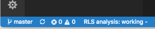

The Rust Language Server (RLS) provides a standard interface for IDEs, editors and tools to interact with Rust. For users it's a hassle free way to get Rust to work with your favourite IDE or editor.
If you haven't already picked an editor, we recommend you use Visual Studio Code as this has the smoothest user experience and is being actively developed by the team behind RLS.
To setup Visual Studio Code to use RLS:
You can do this using the command palette (CMD/CTRL + SHIFT + P)
ext install rust
If you don't have the nightly version of rust or RLS installed the extension will offer to install it for you.
RLS is active and analysing your project

Here are setup instructions for other editors.
If you haven't already installed RLS, please see this guide.
neovim, like vim uses plugins. The plugin we'll be using is LanguageClient-neovim which is a Language Server Client so this means it support any programming languages that implement the LSC protocol.
You'll need a recent version of python (v3) and we'll assume you're using vim-plug plugin manager. Otherwise you can find instructions in vim-plug github repository page.
Install python support for neovim.
sudo pip3 install --upgrade neovim
Edit your vimrc and add the following lines
call plug#begin('~/.local/share/nvim/plugged')
Plug 'autozimu/LanguageClient-neovim', { 'do': ':UpdateRemotePlugins' }
call plug#end()
autocmd BufReadPost *.rs setlocal filetype=rust
" Required for operations modifying multiple buffers like rename.
set hidden
let g:LanguageClient_serverCommands = {
\ 'rust': ['rustup', 'run', 'nightly', 'rls'],
\ }
" Automatically start language servers.
let g:LanguageClient_autoStart = 1
" Maps K to hover, gd to goto definition, F2 to rename
nnoremap <silent> K :call LanguageClient_textDocument_hover()
nnoremap <silent> gd :call LanguageClient_textDocument_definition()
nnoremap <silent> <F2> :call LanguageClient_textDocument_rename()
In a shell, run the following to install the plugin.
nvim +PlugInstall +UpdateRemotePlugins +qa